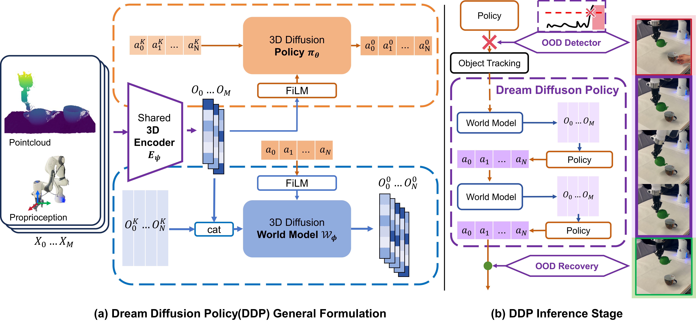
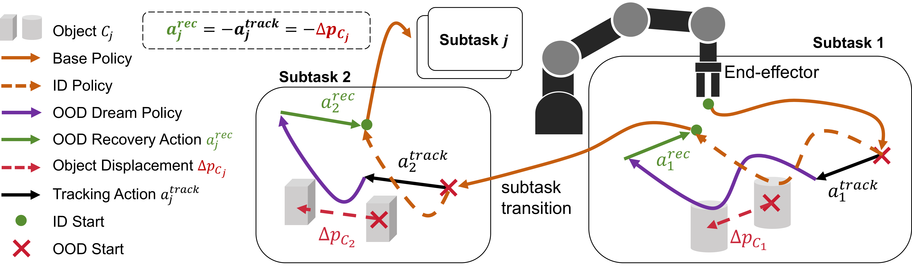
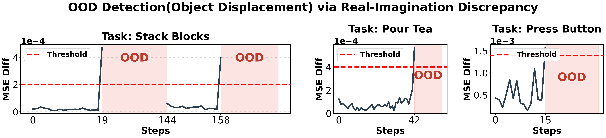

Dreaming the Unseen: World Model-regularized Diffusion Policy for Out-of-Distribution Robustness
1. 论文速览
难度评级：★★★★☆。读懂主线需要熟悉 diffusion policy、3D point-cloud policy、latent world model、OOD detection、机器人闭环控制和真实系统延迟约束。
关键词：Diffusion Policy, World Model, Out-of-Distribution Robustness, Predictive Imagination, 3D Visuomotor Control。
| 阅读定位 | 内容 |
|---|---|
| 论文要解决什么 | 标准视觉运动 imitation policy 依赖连续且未损坏的视觉输入；当目标物体突然位移、相机被遮挡或观测进入严重 OOD 状态时，策略会因 covariate shift 产生累积错误并失败。 |
| 作者的方法抓手 | 用共享 3D encoder 同时服务 diffusion action policy 与 diffusion world model，让 world model 在训练时正则化表征、在推理时预测未来 latent；一旦真实 latent 与预测 latent 的差异超过阈值，就切换到内部 imagination loop。 |
| 最重要的结果 | MetaWorld OOD 上 DDP 达到 73.8% 平均成功率，而带相同 tracking 的 DP3 为 23.9%；真实机器人严重空间位移下 DDP 为 83.3%，DP3 tracking ablation 为 3.3%；真实机器人完全 open-loop imagination 仍为 76.7%。 |
| 阅读时要注意的点 | DDP 的提升不是来自 tracking 单独作用：作者专门用 DP3/FlowPolicy tracking ablation 对照。仿真 OOD 评估还使用 oracle tracking/state transition 来隔离 world model imagination 的作用，这与真实机器人中的 FoundationPose++ 检测和跟踪设置不同。 |
核心贡献清单
- World-model-regularized training pipeline。DDP 以共享 3D encoder 联合优化行为克隆损失和 world-model 预测损失，使未来 latent prediction 进入同一个表征学习过程。
- Robust inference via predictive imagination。推理时用 $\mathcal{D}_{R-I}$ 检测真实观测与想象轨迹的偏离，触发 tracking、autoregressive latent imagination 和 target-specific recovery。
- OOD robustness evaluation。论文在 10 个 MetaWorld 任务、3 个 Adroit 任务和 3 个 Franka Panda 真实任务上报告 ID/OOD、tracking ablation、imagination intervention 和视觉遮挡结果。

2. 动机
2.1 要解决什么问题
论文关注的场景是机器人 manipulation policy 在部署时遇到训练分布外视觉状态。典型例子包括目标物体被突然推到训练区域外、相机画面被遮挡，或者任务中间环境发生动态变化。对于依赖视觉流的 diffusion policy，这类输入会让策略持续接收错误或未见过的视觉证据，导致动作误差逐步放大。
作者把问题定位为“严重 OOD 下的视觉依赖脆弱性”。普通 diffusion policy 可以通过 receding-horizon action chunking 和随机采样对轻微扰动有一定鲁棒性，但论文强调 severe object displacement 和 complete visual occlusion 会让模型失去可靠的空间定位依据。
2.2 已有方法的局限
论文在 Introduction 和 Related Works 中列出几类缓解方式：domain randomization、test-time adaptation、合成 spatial perturbation 数据扩增、大型 pretrained visual model、强化 representational/physical priors、inverse recovery policy 和 RL fine-tuning。作者指出这些方法的共同问题是：要么依赖持续可用的视觉流，要么引入复杂在线管线，要么在 adaptation 中大幅改变专家动作，从而偏离 imitation learning 想保留的 high-fidelity expert skill。
已有 world model 或 diffusion world model 可以预测未来状态，但在作者的定位里，它们通常作为 weakly coupled auxiliary module 使用，没有机制在推理时动态替代 corrupted visual stream。因此，world model 不能只做 passive regularization，而需要成为能在传感器失效时提供 latent context 的 active predictive intuition。
2.3 本文的解决思路
DDP 的高层思路是：训练时让 policy 表征带有预测未来的能力；推理时如果真实视觉变得不可信，就暂时“闭眼”，用 world model autoregressively 预测的 latent 作为 policy 条件，继续生成 action chunk，并在合适的 subtask 边界把物理环境恢复回 ID 状态。
3. 相关工作梳理
3.1 论文自述的相关工作
| 技术线 | 论文如何描述 | 与 DDP 的关系 |
|---|---|---|
| Diffusion Policy for Robotic Manipulation | Diffusion policy 把 action generation 写成 conditional denoising，可建模高维连续控制中的复杂多峰动作分布；DP3 用 3D 表征扩展到 point cloud visuomotor policy。 | DDP 直接基于 DP3 架构，把 action denoising 的视觉 encoder 与 world-model latent prediction 共享。 |
| World Models for Decision Making and Robotics | Dreamer 系列展示了 latent imagination 对连续控制和 sample-efficient learning 的作用；近期 diffusion world models 可预测复杂物理动态。 | DDP 不把 world model 只用于规划或辅助预测，而是让它在 OOD 推理时接管视觉条件。 |
| OOD Challenges and Mitigation Strategies | Domain randomization、synthetic trajectories、RL、online visual pipelines 和 video-diffusion reward models 都试图提升 OOD，但 severe sensor dropout 下仍受限。 | DDP 的定位是以轻量紧耦合 world model 在传感器不可靠时生成 missing visual context，避免昂贵的在线重训练。 |
3.2 直接前作对比
| 维度 | DP3 | FlowPolicy | Diffusion World Model | DDP |
|---|---|---|---|---|
| 核心思路 | 3D encoder + diffusion action policy。 | 用 consistency flow matching 做快速 3D flow-based policy。 | 用 diffusion 模型预测未来状态或 latent。 | 共享 3D encoder 同时训练 action denoising 与 future latent denoising。 |
| 关键假设 | 推理时视觉观测可持续提供有效状态。 | 同样依赖当前观测条件。 | 可以预测未来，但通常不直接替代 policy 条件。 | 真实视觉不可信时，预测 latent 可以短时作为 policy 的条件输入。 |
| OOD 处理 | 论文中作为 base policy 和 tracking ablation。 | 论文中作为 base policy 和 tracking ablation。 | 弱耦合辅助模块不能主动接管 corrupted observation。 | 检测 $\mathcal{D}_{R-I}$，进入 tracking + imagination + recovery 闭环。 |
| 论文实验性能 | MetaWorld tracking OOD 平均 23.9%；真实机器人 tracking OOD 平均 3.3%。 | MetaWorld tracking OOD 平均 5.4%。 | 没有作为独立 baseline 报告。 | MetaWorld tracking OOD 平均 73.8%；真实机器人 tracking OOD 平均 83.3%。 |
4. 方法详解
4.1 方法概览
DDP 的训练输入是专家 demonstration 中的 point cloud、proprioception 和 action sequence。共享 3D encoder $E_\psi$ 从历史观测 $X_{0\dots M-1}$ 中抽取 latent $O_{0\dots M-1}$。这些 latent 一方面作为 diffusion policy $\pi_\theta$ 的 global condition，帮助 denoise action horizon；另一方面与未来 latent target 一起训练 diffusion world model $\mathcal{W}_\phi$，预测 $N$ 步未来 latent。
推理时，系统从 ID real observation 开始；如果 world model 对当前 latent 的预测与真实 encoder latent 的差异过大，就认为视觉进入 OOD。之后系统跟踪被移动的对象，使用预测 latent 而不是 corrupted real latent 来条件化 policy，靠 world model 滑动窗口式地继续生成未来 latent，直到触发目标相关的 recovery。

4.2 方法演变脉络
Diffusion Policy / DP3 → DDP：DP3 已经用 3D point cloud encoder 支撑 action chunk denoising；DDP 保留这个 action policy 主体，但把 encoder 同时用于 future latent prediction，使表征学习承载 dynamics regularization。
Diffusion World Model → DDP：原始 diffusion world model 更偏向预测或规划模块；DDP 改为 feature-level integration，把历史 latent repeat 到 horizon 并与 noisy future latent channel-wise concatenation，避免只靠 prefix-fixing 条件。
OOD adaptation/recovery → DDP：已有方法常通过在线适应、扩增或恢复策略处理 OOD；DDP 的变化是将“什么时候视觉不可信”和“视觉不可信时怎么继续控制”合并到 real-imagination discrepancy 与 latent imagination 中。
4.3 核心设计与数学推导
Action 和 latent chunking
论文用两个时间尺度连接 policy 和 world model：policy 预测完整 horizon $H$ 的动作，但每次只执行 chunk 长度 $N$；world model 在相同 chunk 上预测 $N$ 个未来 latent，并在连续 OOD rollout 中把最后 $M$ 个预测 latent 作为下一轮历史条件。
| 符号 | 含义 |
|---|---|
| $M$ | 历史观测步数；论文仿真和真实机器人均使用 $M=2$。 |
| $H$ | policy 一次 denoise 的动作 horizon；论文设置为 $H=16$。 |
| $N$ | 每次实际执行和 world model 预测的 chunk 长度；论文设置为 $N=8$。 |
Diffusion policy loss
这个公式训练 policy 从加噪后的动作序列中恢复噪声；条件是共享 encoder 提取的历史观测 latent。
$$\mathcal{L}_{BC}=\mathbb{E}_{\mathbf{a},\mathbf{X},\epsilon_p,k_p}\left[\left\|\epsilon_p-\pi_\theta\left(\mathbf{a}^{k_p}_{0\dots H-1},k_p,\mathrm{FiLM}(\mathbf{O}_{0\dots M-1})\right)\right\|_2^2\right]$$| $\mathbf{a}_{0\dots H-1}$ | 专家动作 horizon，长度为 $H$。 |
| $k_p$ | policy diffusion timestep，从 $\mathcal{U}(1,K)$ 随机采样。 |
| $\epsilon_p$ | 添加到动作上的高斯噪声。 |
| $\mathbf{O}_{0\dots M-1}$ | $E_\psi(X_{0\dots M-1})$ 得到的历史 latent；通过 FiLM 注入 1D Conditional U-Net。 |
直觉上，这仍是标准 DDPM noise matching。DDP 的关键变化不在 action loss 本身，而在 $\mathbf{O}$ 来自共享 encoder；这个 encoder 同时被 world model 的未来预测任务约束。
Diffusion world model conditioning
这个公式说明 world model 如何把历史 latent 固定地提供给每个未来时间步，而不是只在采样前缀处条件化。
$$\mathbf{X}_{in}=\mathrm{Repeat}(\mathbf{x}_{obs},N)\oplus\mathbf{X}_{sample}$$| $\mathbf{x}_{obs}$ | 历史观测 latent，可以理解为 world model 的结构上下文。 |
| $\mathrm{Repeat}(\mathbf{x}_{obs},N)$ | 把历史条件复制到 $N$ 个未来位置，让 1D U-Net 每一层都能访问历史结构。 |
| $\mathbf{X}_{sample}$ | 加噪的未来 latent 样本。 |
| $\oplus$ | channel-wise concatenation。 |
作者认为 observation 是高维点云几何 latent，action 是方向性控制，两者属性不同；因此直接在 feature level 整合历史 latent 比 prefix-fixing 更适合保持 persistent grounding。
world model loss 与 policy loss 对称：它不是恢复动作噪声，而是恢复未来 observation latent 上的噪声。
$$\mathcal{L}_{WM}=\mathbb{E}_{\mathbf{O},\mathbf{a},\epsilon_w,k_w}\left[\left\|\epsilon_w-\mathcal{W}_\phi\left(\mathbf{C}_{wm},k_w,\mathrm{FiLM}(\mathbf{a}_{M-1\dots M+N-2})\right)\right\|_2^2\right]$$| $\mathcal{W}_\phi$ | Diffusion World Model，使用独立但同参数规模的 1D U-Net。 |
| $\mathbf{C}_{wm}$ | 由历史 latent 和 noisy future latent 组合得到的 world model 输入。 |
| $\mathbf{a}_{M-1\dots M+N-2}$ | 与未来 latent 对齐的 action sequence，通过 FiLM 作为 global condition。 |
联合训练目标
总损失把 imitation learning 的动作噪声匹配和 future latent prediction 放在同一次端到端更新中。
$$\mathcal{L}_{total}=\mathcal{L}_{BC}+\lambda\mathcal{L}_{WM}$$| $\lambda$ | world model loss 权重；论文仿真与真实机器人均设为 1。 |
| $(\psi,\theta,\phi)$ | 共享 encoder、policy 和 world model 参数，同步通过梯度下降更新。 |
| EMA | 作者对模型权重使用 Exponential Moving Average 稳定训练和推理。 |
OOD 检测与恢复
如果真实观测 latent 与 world model 预测 latent 差得太远，系统就把当前视觉流判为不可信。
$$\mathcal{D}_{R-I}(t)=\left\|\mathbf{O}_{real}^{t}-\mathbf{O}_{pred}^{t}\right\|_2^2$$| $\mathbf{O}_{real}^{t}$ | 当前真实观测经 $E_\psi$ 编码得到的 latent。 |
| $\mathbf{O}_{pred}^{t}$ | world model 根据上一 latent 和上一 action 预测出的当前 latent。 |
| $\tau_{diff}$ | OOD 阈值；真实机器人中 Stack Blocks 为 0.0002，Pour Tea 为 0.0004，Press Button 为 0.0012。 |
检测到哪个目标物体移动后，DDP 不尝试在线重新学习，而是用位姿差作为跟踪和恢复动作。
$$\Delta\mathbf{p}_{C_j}=\mathbf{p}_{C_j}-\mathbf{p}_{C_j}^{exp},\qquad \mathbf{a}^{track}_j=\Delta\mathbf{p}_{C_j},\qquad \mathbf{a}^{rec}_j=-\Delta\mathbf{p}_{C_j}$$| $C_j$ | 当前 subtask $S_j$ 的目标物体。 |
| $\mathbf{p}_{C_j}$ | 由 6D pose estimator 得到的物体当前静止位姿。 |
| $\mathbf{p}_{C_j}^{exp}$ | 该物体在 ID 状态下的期望位姿。 |
这里有一个明确假设：被移动物体最终会稳定在静止位姿，系统只需估计单个 static spatial displacement，而不是在混乱运动中连续 tracking。
DDP 推理伪代码整合版
Input: E_psi, pi_theta, W_phi, pose estimator, subtasks S, expected poses p_exp, threshold tau_diff
OOD_Mode = False
C_disp = empty set
O_curr = E_psi(X_real^0)
for subtask S_j targeting object C_j:
while T_end(S_j) is False:
O_real = E_psi(X_real^t)
if not OOD_Mode:
O_pred = W_phi(O_real^{t-1}, a_{t-1})
D_RI = ||O_real - O_pred||_2^2
if D_RI > tau_diff:
OOD_Mode = True
C_disp = identify displaced objects by pose estimator
if C_j in C_disp:
execute a_track = p_Cj - p_Cj_exp
O_curr = O_pred
else:
O_curr = O_real
a_t = pi_theta(. | O_curr)
execute action chunk a_t
if OOD_Mode:
O_curr = W_phi(O_curr, a_t)
if OOD_Mode and C_j in C_disp:
execute recovery action a_rec = -Delta p_Cj
remove C_j from C_disp
re-evaluate D_RI
if D_RI <= tau_diff:
OOD_Mode = False
来源：正文 Inference Stage 与 Appendix “Pseudocode for Closed-Loop Inference”。注意源码伪代码中 recovery action 一行写成 $\mathbf{p}_{C_j}-\mathbf{p}_{C_j}^{exp}$，正文定义为 $\mathbf{a}^{rec}_j=-\Delta\mathbf{p}_{C_j}$；本报告按正文数学定义解释。
4.4 实现要点
| 模块 | 实现细节 | 来源 |
|---|---|---|
| 3D encoder | Point cloud 经 PointNet 得到 64 维特征，proprioception 经 MLP 得到 64 维特征，拼接为 128 维 unified latent embedding。 | 正文 Methods / Simulation Model Setup |
| Policy U-Net | 1D Conditional U-Net；仿真 down-sampling channels 为 [256, 512, 1024]，diffusion step embedding 为 128。 | 正文 Simulation Model Setup |
| World Model U-Net | 独立的 1D U-Net，参数规模与 policy U-Net 相同；预测 $N=8$ 个未来 latent。 | 正文 Simulation Model Setup |
| 真实机器人 Simple DDP | 轻量化 U-Net：policy 为 [128, 256, 384]，world model 为 [128, 256, 512]；保留 $M=2,H=16,N=8,\lambda=1$。 | 正文 Real World Experiments |
| 快速采样 | 部署时使用 DDIM，把 policy 和 world model denoising steps 都降到 $K=10$。 | Appendix B |
| 控制频率 | 双 diffusion、3D encoding、6D tracking 和 OOD detection 同时运行后，系统控制频率约束为 $2\text{ Hz}$，与人工遥操作采集频率一致。 | Appendix B1 |
| 点云处理 | RealSense L515 原始深度帧约 240,000 点，先随机裁剪到 10,000 点，再用 PyTorch3D 加速 FPS 到 2,048 点，约 15 ms。 | Appendix B2 |
5. 实验
5.1 实验设置
仿真 benchmark
论文使用 10 个 MetaWorld 任务测试一般 manipulation 与 OOD spatial shift 鲁棒性，并使用 3 个 Adroit 任务测试高自由度连续控制中的 world model predictive stability。训练数据为每个任务 50 条 demonstrations；所有模型训练 500 epochs，3 个 seeds (0, 1, 2)。评估时每个任务、每个 seed 运行 100 episodes，报告平均成功率。

| 任务 | 被移动物体 | 触发时机 | 位移向量 $\Delta\mathbf{P}$ | tracking logic |
|---|---|---|---|---|
| Assembly | Peg | Chunk 6 | [-0.25, 0.0, 0.0] | Single-Stage |
| Button Press | Box & Button | Chunk 3 | [-0.25, 0.0, 0.0] | Single-Stage |
| Drawer Open | Drawer | Chunk 2 | [0.0, 0.0, +0.10] | Single-Stage |
| Hammer | Box & Nail | Chunk 5 | [0.0, +0.10, 0.0] | Single-Stage |
| Door Unlock | Door | Chunk 2 | [0.0, +0.10, 0.0] | Single-Stage |
| Soccer | Goal Net | Chunk 2 | [-0.20, +0.10, 0.0] | Single-Stage |
| Pick Place | Puck | Chunk 2 | [-0.20, -0.10, 0.0] | Two-Stage + Safe Lift |
| Push | Puck | Chunk 2 | [-0.25, 0.0, 0.0] | Two-Stage |
| Sweep | Puck | Chunk 2 | [+0.20, +0.10, 0.0] | Two-Stage |
| Coffee Pull | Mug & Machine | Chunk 2 | [-0.20, 0.0, 0.0] | Two-Stage |
真实机器人 benchmark
真实平台为 Franka Emika Panda + Robotiq 2F-85 gripper。视觉由 Intel RealSense L515 提供，D455 用于对象 tracking；动作空间为 7-DoF relative commands $(\Delta x,\Delta y,\Delta z,\mathrm{roll},\mathrm{pitch},\mathrm{yaw})$ 加二值 gripper state，通过 franky inverse kinematics 执行。每个任务用 scripted kinematic oracle 收集 25 条 expert demonstrations，训练时初始目标位置在 10 cm 线性范围内均匀随机化。
| 任务 | 难度 / subtask | 成功标准 |
|---|---|---|
| Press Button | Easy / 1 subtask / 1 OOD target | 按钮被精确按到激活阈值，避免 under-press 或 over-press。 |
| Pour Tea | Medium / 2 subtasks / 1 OOD target | 抓取茶壶、移动到杯子、倒茶、放回；倒茶期间壶嘴对准杯中心。 |
| Stack Blocks | Hard / 2 subtasks / 2 OOD targets | 粉色块稳定放到绿色底座上，松爪后保持平衡。 |

训练和评估配置
| 项目 | 仿真 | 真实机器人 |
|---|---|---|
| 历史步 / horizon / chunk | $M=2,H=16,N=8$ | $M=2,H=16,N=8$ |
| loss weight | $\lambda=1$ | $\lambda=1$ |
| 训练 epochs | 500 | 2000 |
| demonstrations | 50 per task | 25 per task |
| seeds / trials | 3 seeds；100 episodes/task/seed | 每个设置 10 trials/task |
| 训练硬件 | 未在源码中明确说明 | NVIDIA 4090 |
| 部署硬件 | 未在源码中明确说明 | NVIDIA 4070；policy 40 ms，world model 70 ms |
5.2 主要结果
MetaWorld / Adroit 表格结果
| 设置 | DP3 | FlowPolicy | DDP | 解读 |
|---|---|---|---|---|
| Base Policy ID Total Avg | 89.8 | 89.3 | 89.5 | DDP 在 ID 下没有牺牲 base imitation performance；三者总平均接近。 |
| Base Policy OOD MetaWorld Avg | 0.8 | 6.7 | 1.3 | 没有 tracking/imagination 时，严重 OOD 位移几乎让 base policies 全部失败。 |
| Tracking-Augmented OOD MetaWorld Avg | 23.9 | 5.4 | 73.8 | 同样加入 tracking 后，DDP 显著高于 DP3/FlowPolicy，说明 world model latent imagination 是核心差异。 |
| DDP 10% Imagined ID Total Avg | - | - | 93.0 | 少量 imagined latent 替换并未破坏控制，在 Adroit 上从 77.8 提高到 95.2。 |
| DDP 50% Imagined ID Total Avg | - | - | 90.5 | 半数 real observation 被替换后仍接近 ID baseline。 |
| DDP Open-loop ID Total Avg | - | - | 68.7 | 完全 open-loop 后 MetaWorld 降到 61.4，但 Adroit 仍为 93.2；说明 latent rollout 可用但任务依赖差异明显。 |

真实机器人结果
| 设置 | Press Button | Pour Tea | Stack Blocks | 平均 | 解读 |
|---|---|---|---|---|---|
| DP3 Base ID | 100 | 90 | 90 | 93.3 | 标准 ID setting 下 DP3 很强。 |
| DDP Base ID | 100 | 90 | 80 | 90.0 | DDP ID 性能与 DP3 接近，Stack Blocks 略低。 |
| DP3 Tracking OOD | 10 | 0 | 0 | 3.3 | 仅添加 tracking 几乎无法解决真实严重 OOD。 |
| DDP Tracking OOD | 100 | 90 | 60 | 83.3 | DDP 在三个任务中都保持明显恢复能力，Stack Blocks 因两目标与精细堆叠最难。 |
| DDP Open-loop Imagination | 100 | 80 | 50 | 76.7 | 初始 chunk 后完全依赖 imagined latent 仍可完成多数任务。 |


5.3 消融实验
Tracking ablation。作者把相同 tracking intervention 加到 DP3 和 FlowPolicy 上。MetaWorld OOD 中，DP3 tracking 只有 23.9%，FlowPolicy tracking 只有 5.4%，而 DDP 为 73.8%。真实机器人中，DP3 tracking ablation 为 3.3%，DDP 为 83.3%。该消融直接对应“是不是 tracking 本身就足够”的问题。
Imagination intervention。作者在 ID setting 随机替换真实观测为 imagined latent，比例为 10%、50%、100%。MetaWorld 在 10%/50% 下保持 92.3%/89.4%，open-loop 为 61.4%；Adroit 在 10%/50%/open-loop 分别为 95.2%/94.0%/93.2%。这说明 world model 生成的 latent 对部分任务可作为稳定替代条件。
视觉遮挡压力测试。真实机器人中，作者用手遮挡相机，制造明显 $\mathcal{D}_{R-I}$。DP3 baseline 失效，而 DDP 对 Stack Blocks 和 Pour Tea 通过 autoregressive imagination 完成任务。

5.4 补充实验与附录细节
Appendix A 给出完整 DDP inference pseudocode，明确了 OOD_Mode、displaced object set、每个 subtask 的 completion trigger、world model autoregressive forecast 和 recovery 后的重新评估。
Appendix B 给出 MetaWorld OOD 评估实现细节。仿真中作者有意跳过自动 OOD detector 和 heuristic recovery trigger，改用 oracle state transitions：在指定 chunk 直接移动 MuJoCo object body 和 robot mocap，确保评估关注 policy 是否能在 imagined latent 下继续完成操作，而不是检测延迟或 tracking 误差。

Appendix C 给出真实机器人部署补充：ID 执行序列、DP3 tracking ablation failure modes、2 Hz 控制频率、DDIM $K=10$ 快速采样、点云从 240k 到 10k 再到 2048 点的两阶段下采样。


6. 结果分析与讨论
6.1 论文已给出的结果解释
作者对 MetaWorld 结果的解释是：严重 OOD 空间位移使 base policies 近乎失效；仅有 tracking 的 baseline 仍然不足，因为它们没有能在 corrupted observation 下维持 action generation 的预测 latent。DDP 的 coupled latents 使 robot 可以在 OOD 阶段使用 imagined latent 执行动作，并在目标恢复后返回 ID 视觉流。
对 imagination intervention，作者认为 DDP 的 world model 不只是填补视觉缺口，也表现为 temporal smoother。尤其在 Adroit 高自由度控制中，10% imagined substitution 反而提高平均成功率，论文将其解释为 imagined representation 对连续控制的稳定作用。
对真实机器人，作者把 $\mathcal{D}_{R-I}$ 曲线作为 OOD detection 的证据：物体突然移位会使真实 latent 明显偏离 imagined projection，超过阈值后触发 OOD mode。定性图中，DDP 在 Stack Blocks 中逐对象跟踪与恢复，在 Pour Tea 中对移位杯子继续想象倒茶，在 Press Button 中恢复到合适位置按压。
6.2 论文明确写出的未来方向
Conclusion 中作者提出，后续可以用 meta-reinforcement learning 在线自适应 fine-tune world model，用 lifelong learning 保留并组合先验知识，或加入 low-level tactile feedback 提升真实部署鲁棒性。作者还计划扩展到更复杂的多物体 manipulation，并探索与 language-conditioned methods 或 LLM 高层推理规划的结合。
7. 分析、局限与边界
7.1 这篇论文最有价值的地方
从论文自己的问题设定和实验链条看，DDP 最核心的价值在于把 world model 从“训练时辅助预测/正则项”推进到“推理时可以主动替代 corrupted observation 的 latent 条件”。这使 OOD 鲁棒性不只依赖更大的训练分布或在线 adaptation，而是通过 real-imagination discrepancy 明确决定何时放弃真实视觉、何时使用内部 latent forecast。
7.2 结果为什么站得住
论文的证据链包含三层对照。第一，ID 结果显示 DDP 没有明显损害 base policy performance。第二，tracking-augmented DP3 和 FlowPolicy 显示“知道物体移到哪里”本身不足以恢复成功，DDP 的 world model imagination 才是差异来源。第三，imagination intervention 和 open-loop stress test 直接检验 imagined latent 是否可作为 policy condition；真实机器人实验又用 $\mathcal{D}_{R-I}$ 曲线、视觉遮挡和 failure-mode 图补充了物理部署证据。
7.3 作者自述的局限
- 依赖外部 tracking 模块。DDP 高度依赖 FoundationPose++ 等外部 tracking/pose estimation；多阶段 subtask 中 tracking drift 可能累积。
- 任务必须从 ID 状态开始。初始观测需要严格处在 In-Distribution 区域，才能锚定后续 real-imagination comparison 和 imagined rollout。
- 难处理复合 OOD 或低层动作扰动。当 OOD 事件连续叠加，或出现 gripper slippage 这类 low-level action disruption，当前推理机制会变得困难。
7.4 适用边界
DDP 适用于任务可分解为对象相关 subtasks、目标物体可通过 6D pose estimator 定位、且 OOD 主要表现为空间位移或视觉遮挡的 manipulation setting。真实系统目前以 2 Hz 控制频率运行，作者明确将设计目标放在精确恢复严重 OOD，而不是高速动态 manipulation。
仿真 OOD 结果需要按作者的实验设定理解：MetaWorld 中使用 oracle timing、oracle state transition 和 MuJoCo backend 操作来隔离 imagination 能力；这不能直接等同于没有 oracle 的真实 tracking 场景。真实机器人部分则补充验证了部署时的 detection/tracking pipeline。
8. 复现审计
源码可解析：arXiv e-print 包含单一主文件 arxiv.tex、main.bib 和 10 个图像资源；正文和 Appendix 均在主 TeX 内。
图表已本地化：报告引用 11 个本地 PNG，其中 10 个来自 arXiv HTML 对源码 PDF 图的渲染，loss.png 来自源码原始 PNG。
代码仓库：论文源码与 arXiv 页面未给出 DDP 官方代码仓库；引用中只出现 FoundationPose++ 与 franky 等依赖项目链接。
缺少若干训练细节：论文给出了模型结构、epochs、demo 数、chunk 参数、真实机器人 GPU 与推理时延，但未在源码中明确列出 optimizer、learning rate、batch size、数据预处理全部脚本和随机种子实现方式。
复现实验门槛：真实机器人复现需要 Franka Panda、Robotiq 2F-85、L515、D455、FoundationPose++、franky IK、PyTorch3D FPS 和 scripted kinematic oracle；MetaWorld OOD 需要实现 Appendix 中的 oracle chunk timing 与 MuJoCo state manipulation。